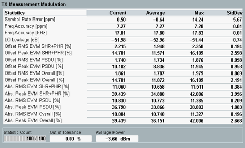

The "TX Measurement Modulation" view shows an overview of modulation results and the corresponding statistics.

The "TX Measurement Modulation" table contains the following values:
Symbol Rate Error: symbol rate error in ppm
Frequency Accuracy: difference between the measured and an ideal channel frequency in ppm or kHz
LO Leakage: local oscillator leakage (I/Q offset) indicates the magnitude of carrier signal feedthrough, in the received signal.
Error Vector Magnitude (EVM): offset and absolute vector error (RMS and peak) between the received and ideal symbols in percentage. The EVM is measured within headers (SHR+PHR), payload (PSDU) and for the complete PPDU (overall).
Average Power: average burst power during the carrier-on state
For additional information, refer to "Common View Elements".